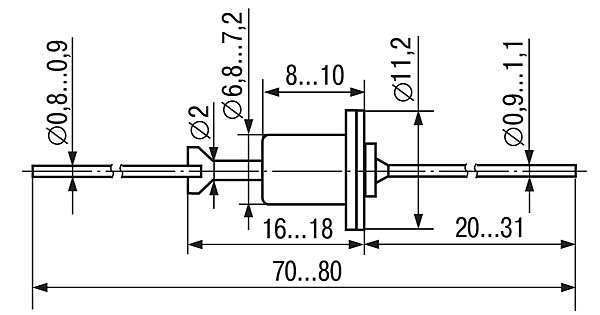

Диод Д226
Диод Д226, Д226А, Д226Б, Д226Е - выпрямительный, малой мощности (сплавной, кремниевый). Имеет металлостеклянный корпус. Выводы - гибкие. На его корпусе нанесена цоколёвка и название диода. Масса диода не более 2 г.

Рис. 1 - Габаритные размеры диода Д226
Таблица 1
| Параметр | Маркировка | Значение |
|---|---|---|
| Максимальное постоянное обратное напряжение, В. | Д226 | 400 |
| Д226А | 300 | |
| Д226Б | 200 | |
| Максимальный постоянный прямой ток, мА. | Д226, Д226А, Д226Б | 300 |
| Максимальная рабочая частота диода, кГц | Д226, Д226А, Д226Б | 1 |
| Постоянное прямое напряжение, В | Д226, Д226А, Д226Б | 1 (300) |
| Постоянный обратный ток, мкА | Д226 | 50 (400) |
| Д226А | 50 (300) | |
| Д226Б | 50 (200) | |
| Рабочая температура, °C | Д226, Д226А, Д226Б | -60...+80 |
Таблица 2
| Параметр | Значение |
|---|---|
| Обратное напряжение (импульсное) при температуре -60...+50°C: |
|
| Д226 | 400 В |
| Д226А | 300 В |
| Д226Б | 600 В |
| Д226Е | 200 В |
| при температуре +50...+80°C: | |
| Д226 | 300 В |
| Д226А | 200 В |
| Д226Б | 500 В |
| Д226Е | 150 В |